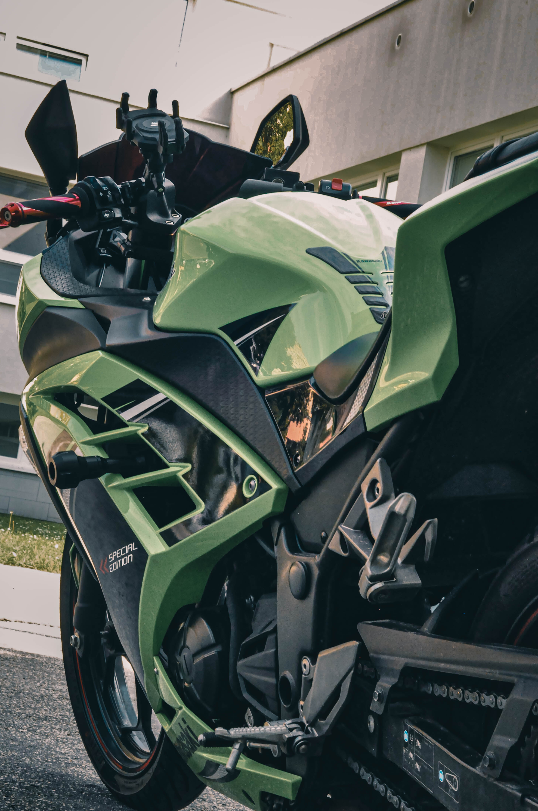
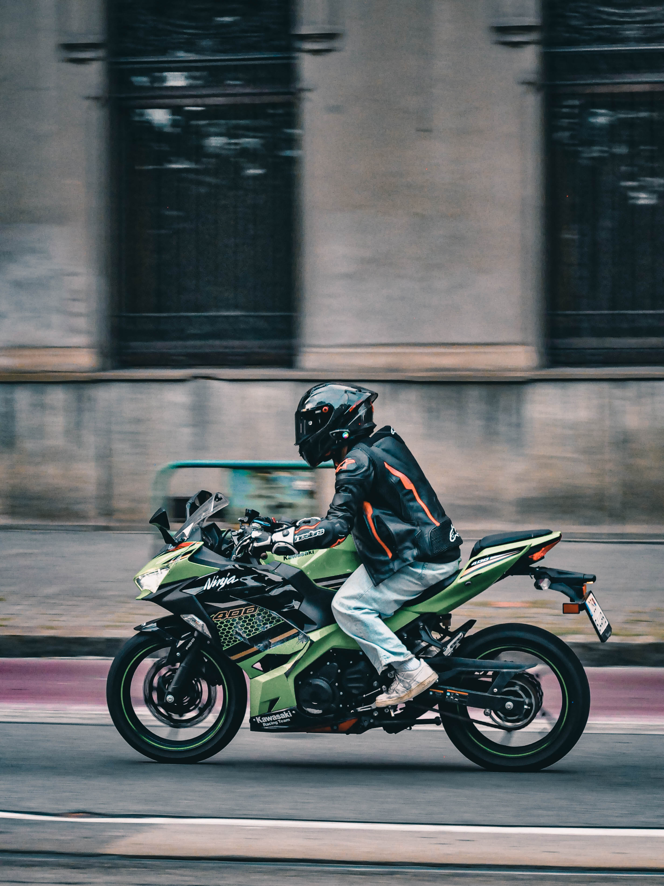
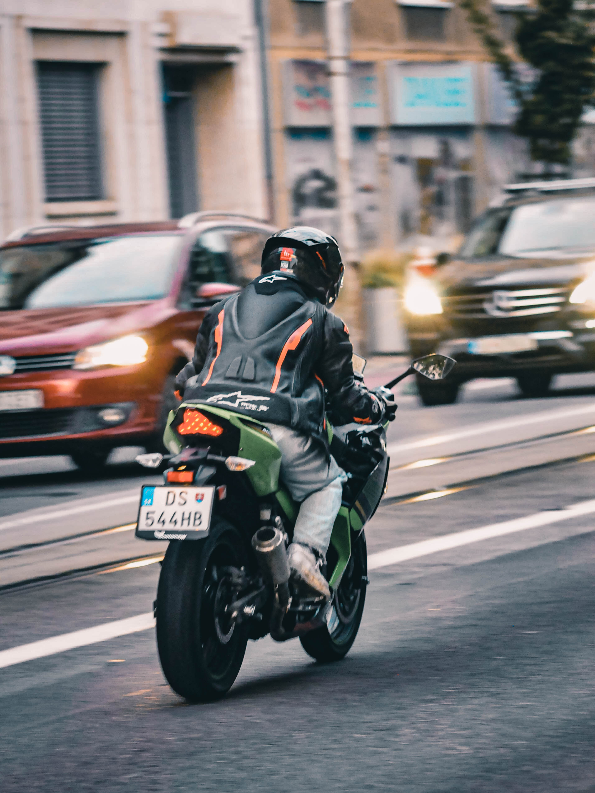
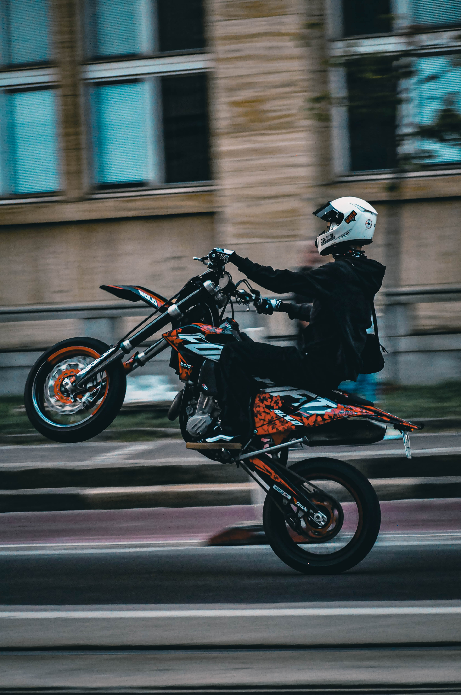

Gallery





Motosport photographer
Hey there, I'm Bruno and I'm motosport photographer/fan originated from Slovakia. I'm starting my journy so feel free to give me advice. I use Nikon D90 - pretty old camera but "you have to use what u have". I have been doing it for aroud 4 months now.